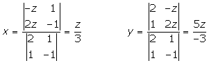

Ecuaciones de la recta en el espacio
Ecuación vectorial de la recta
Sea P(x1, y1) es un punto de la recta r y  su vector director, el vector tiene igual dirección que
su vector director, el vector tiene igual dirección que  , luego es igual a
, luego es igual a  multiplicado por un escalar:
multiplicado por un escalar:

Ecuaciones paramétricas de la recta
Operando en la ecuación vectorial de la recta llegamos a la igualdad:
Esta igualdad se verifica si:
Ecuaciones continuas de la recta
Despejando e igualando λ en las ecuaciones paramétricas se tiene:
Ecuaciones implícitas de la recta
Una recta puede venir determinada por la intersección de los planos.
Si en las ecuaciones continuas de la recta quitamos denominadores y pasamos todo al primer miembro, obtenemos también las ecuaciones implícitas.
Ejemplos
1Hallar las ecuaciones paramétricas, en forma continua e implícitas de la recta que pasa por el punto A = (1, 2, 1) y cuyo vector director es .

2Hallar las ecuaciones paramétricas, en forma continua e implícita de la recta que pasa por los puntos A(1, 0, 1) y B(0, 1, 1).
3Sea r la recta de ecuación:
¿Pertenecen a r los puntos A(0, −2, −2) y B(3, 2, 6)?
4Dada la recta r:
Hallar las ecuaciones en forma continua y paramétrica.
